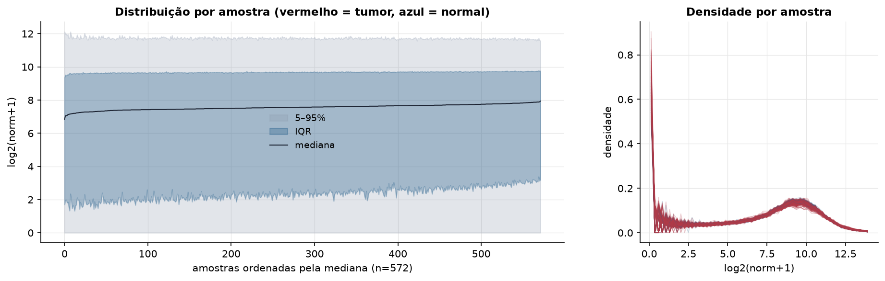
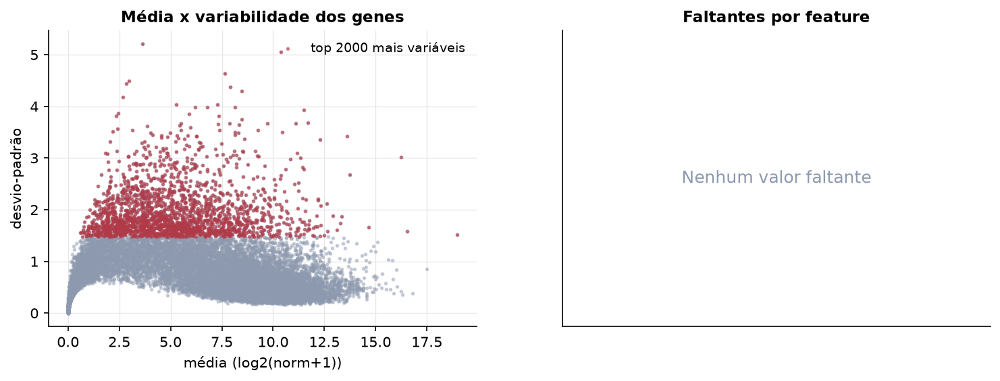
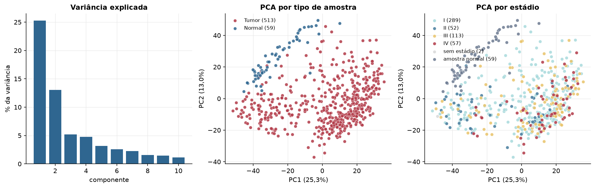
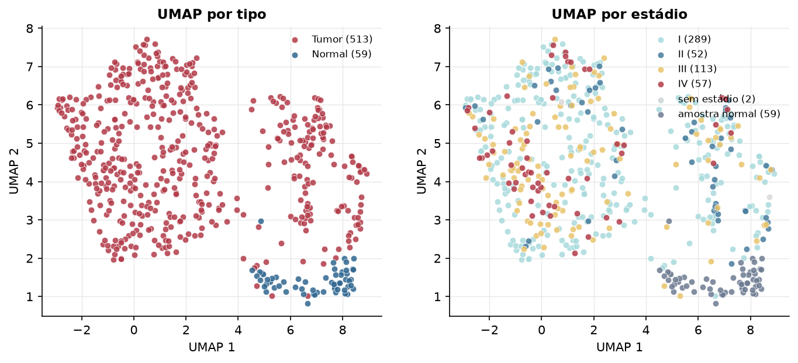
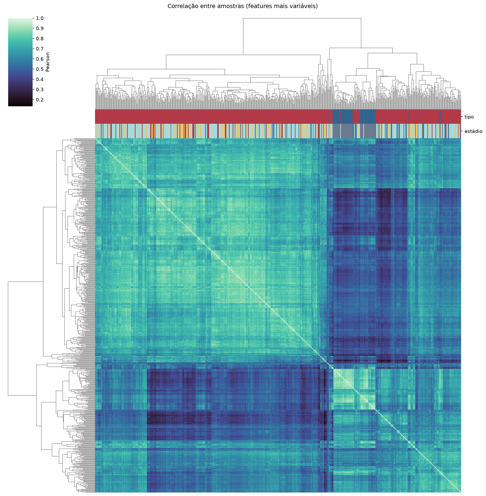
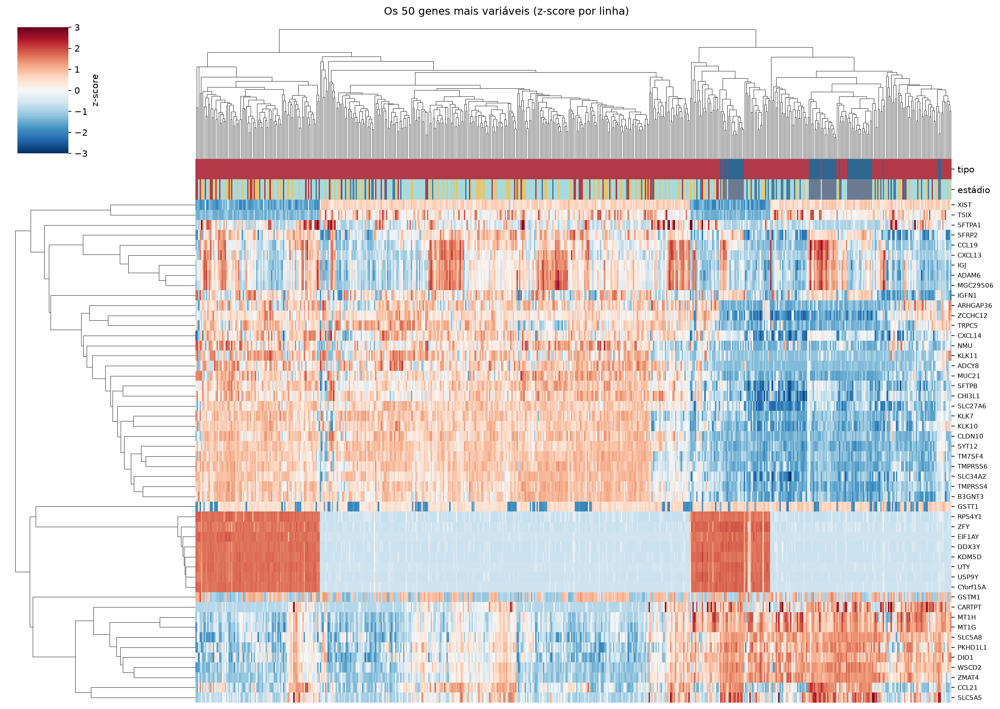
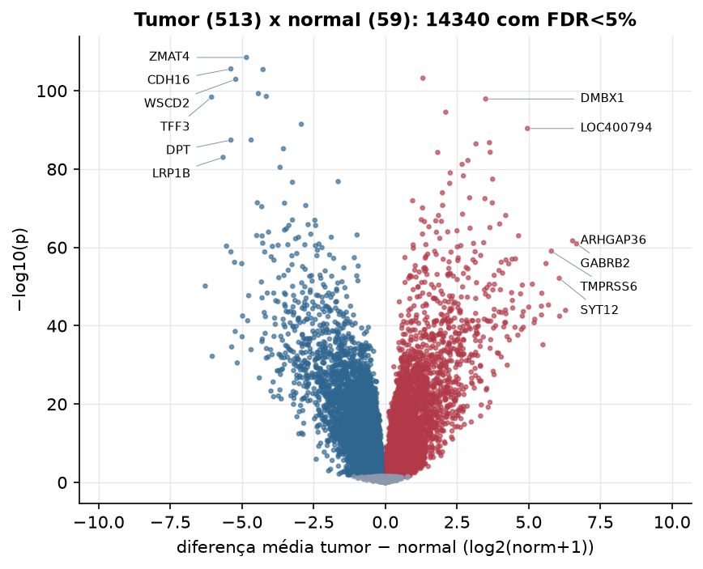
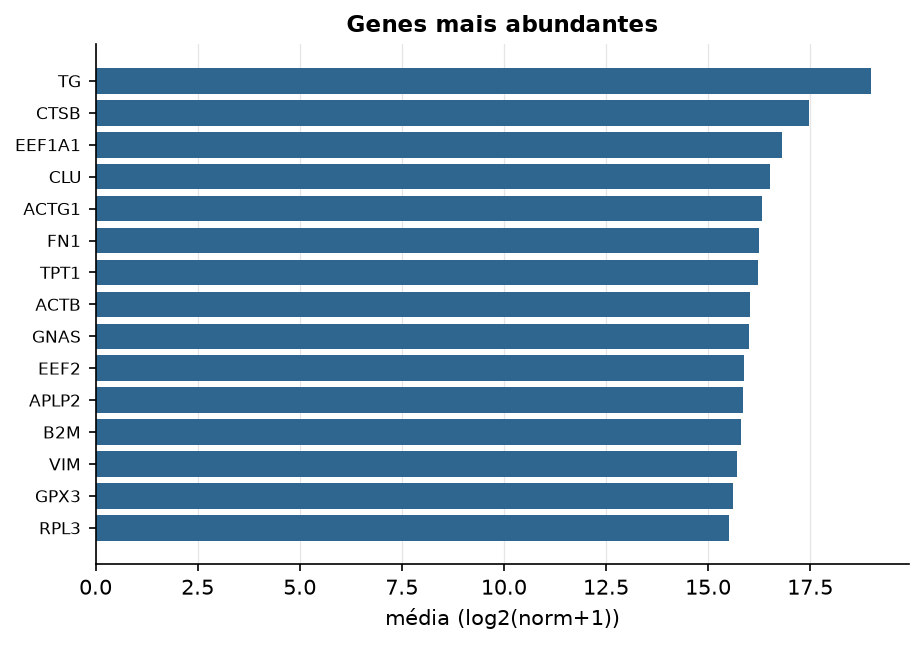

THCA · RNA-seq (PanCanAtlas)
Illumina HiSeq, RSEM normalizado e corrigido por lote (EB++), log2(x+1) · gerado em 22/10/2026 05:00
20.531genes
513amostras tumorais
59amostras normais
0,0%valores faltantes
Fonte: PanCanAtlas EB++ via API do Xena
Estes valores já vêm normalizados e com correção de lote entre plataformas e centros. Servem bem para modelos gaussianos ou redes neurais; para um modelo de contagem use as contagens brutas do GDC.
Principais resultados
- 20.531 genes medidos em 572 amostras (513 tumorais e 59 normais); 0,0% dos valores estão faltando.
- Os dois primeiros componentes principais explicam 25,3% e 13,0% da variância das features mais variáveis.
- Correlação mediana entre amostras: 0,66.
- Tumor x normal: 14340 genes diferentes com FDR < 5% (5900 maiores no tumor, 8440 maiores no normal; 59 pacientes têm o par tumor-normal).
- Mais aumentados no tumor: GABRA6, DMBX1, OR4D10, LOC400794, PLA2G12B, CSF2, REN, IBSP.
- Mais reduzidos no tumor: ZMAT4, CDH16, CWH43, WSCD2, TPO, MRO, TFF3, COL23A1.
- Associações clínicas com p < 0,05 nos componentes principais: PC1 com estádio (p=2.5e-08); PC2 com estádio (p=0.031); PC3 com idade (p=0.0026).
- Em mediana, 80,3% dos genes têm expressão acima de log2(norm+1)=1 em cada amostra.
Distribuição dos valores


Estrutura das amostras




Tumor x normal

Features mais diferentes entre tumor e normal
| diferenca_tumor_menos_normal | t | p | fdr | |
|---|---|---|---|---|
| ZMAT4 | -4.841 | -29.564 | 3.12e-109 | 6.28e-105 |
| CDH16 | -5.385 | -33.7 | 2.56e-106 | 2.49e-102 |
| CWH43 | -4.266 | -30.96 | 3.7e-106 | 2.49e-102 |
| GABRA6 | 1.314 | 27.417 | 5.98e-104 | 3.02e-100 |
| WSCD2 | -5.217 | -30.554 | 1.17e-103 | 4.71e-100 |
| TPO | -4.426 | -27.231 | 5.25e-100 | 1.76e-96 |
| MRO | -4.15 | -30.871 | 2.82e-99 | 8.12e-96 |
| TFF3 | -6.059 | -34.825 | 4.1e-99 | 1.03e-95 |
| DMBX1 | 3.5 | 26.095 | 1.24e-98 | 2.78e-95 |
| OR4D10 | 2.109 | 25.31 | 2.92e-95 | 5.9e-92 |
| COL23A1 | -2.929 | -27.878 | 3.57e-92 | 6.54e-89 |
| LOC400794 | 4.958 | 30.19 | 4.24e-91 | 7.13e-88 |
| SLC5A8 | -4.679 | -26.61 | 3.71e-88 | 5.5e-85 |
| DPT | -5.383 | -31.148 | 3.82e-88 | 5.5e-85 |
| PLA2G12B | 3.633 | 29.016 | 1.77e-87 | 2.38e-84 |
| CSF2 | 3.161 | 27.899 | 3.63e-87 | 4.58e-84 |
| MPPED2 | -3.552 | -29.041 | 6.34e-86 | 7.52e-83 |
| REN | 3.659 | 31.445 | 5e-85 | 5.6e-82 |
| IBSP | 1.829 | 23.412 | 5.6e-85 | 5.95e-82 |
| LRP1B | -5.658 | -32.281 | 9.94e-84 | 1e-80 |
| GALE | 2.881 | 35.202 | 6.35e-83 | 6.1e-80 |
| CST5 | 2.68 | 23.607 | 6.12e-82 | 5.61e-79 |
| ATP2C2 | -3.671 | -31.519 | 3.42e-81 | 3e-78 |
| TGFA | 2.264 | 32.166 | 9.07e-80 | 7.62e-77 |
| TRY6 | 2.724 | 22.526 | 5.22e-79 | 4.21e-76 |
| FAM178B | 3.744 | 29.763 | 3.74e-78 | 2.9e-75 |
| L3MBTL4 | -1.643 | -26.661 | 1.55e-77 | 1.16e-74 |
| HGD | -3.238 | -25.738 | 2.3e-77 | 1.65e-74 |
| CRLF2 | 2.246 | 21.961 | 4.34e-77 | 3.02e-74 |
| GALNT7 | 1.991 | 31.182 | 1.12e-74 | 7.56e-72 |
Associação com variáveis clínicas
p-valores da associação dos três primeiros componentes principais (só tumores) com estádio (Kruskal-Wallis), sexo (Mann-Whitney), idade (Spearman) e sobrevida global (Cox univariado).
| estádio (Kruskal) | sexo (Mann-Whitney) | idade (Spearman) | sobrevida OS (Cox) | |
|---|---|---|---|---|
| PC1 (25,0%) | 2.48e-08 | 0.937 | 0.546 | 0.287 |
| PC2 (10,1%) | 0.031 | 0.547 | 0.53 | 0.062 |
| PC3 (5,6%) | 0.364 | 0.22 | 0.003 | 0.931 |
Mais abundantes
